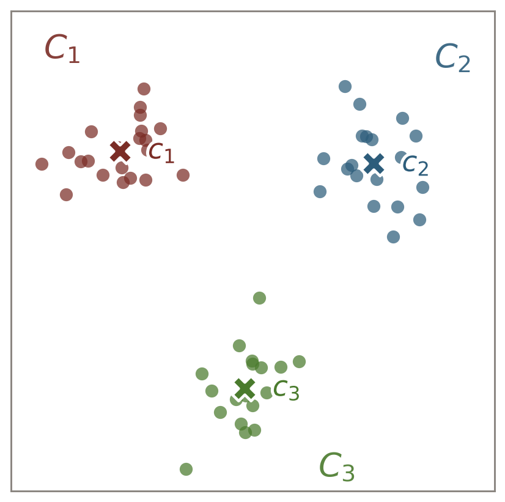

iris = d3.csv("https://raw.githubusercontent.com/plotly/datasets/master/iris.csv", d3.autoType);
Plot.plot({
style: {width: '80%'},
inset: 10,
grid: true,
color: {
type: "categorical"
},
x: { label: "Sepal Length →"},
y: { label: "↑ Petal Length"},
marks: [
Plot.frame(),
Plot.dot(iris, {
x: 'SepalLength',
y: 'PetalLength',
stroke: "Name"
})
]
})Clustering
14 minutes
The Iris Dataset
Centroid-based Paritioning
Input: A dataset X\subset\mathbb{R}^d containing n objects and k\in\{1,2,\ldots,n\}
Output: Partition X into clusters \{C_1,C_2,\ldots,C_k\} such that
- C_i\subset X
- |C_i|\geq1
- C_i\cap C_j=\emptyset, for i\neq j.
Objective: Minimize the within-cluster variation by miniming the objective function: E=\sum_{i=1}^k\sum_{p\in C_i}\|p-c_i\|^2, where c_i denotes the centroid of C_i.
Bad news: The problem is \mathcal{NP}-hard.

k-Means: A Greedy Partitioning
Data objects are put into clusters greedily using their nearest centroids
. . .
# Input:
# - X: a list of n number of tuples (x1, x2,...,xd)
# - k: a positive integer, 1<=k<=n
# Output:
# A set of k clusters
- Randomly choose k objects from X as the centroids
while(clusters are not stable):
- (re)assign each object to the cluster of the nearest centroid
- update the cluster centroids, by calculating the mean of objects
return clustersk-Means in Action
svg.node()viewof k = Inputs.range([1, n], {
value: 5,
step: 1,
label: `k`
})
viewof start = html`<form>${Object.assign(html`<button style="margin: 3px" type=button>Initialize`, {onclick: event => event.currentTarget.dispatchEvent(new CustomEvent("input", {bubbles: true}))})}`
viewof next = html`<form>${Object.assign(html`<button style="margin: 3px" type=button>Update`, {onclick: event => event.currentTarget.dispatchEvent(new CustomEvent("input", {bubbles: true}))})}`d3 = require("d3@5")
W = width * 0.5
H = W * 0.5
n = 50
pad = 10
data = Array.from({ length: n }, () => ({
x: d3.randomUniform(pad, W-pad)(),
y: d3.randomUniform(pad, H-pad)()
}));
centroids = [];
function distance(a, b) {
return Math.sqrt(
(a.x - b.x) ** 2 + (a.y - b.y) ** 2
);
}
voronoi = d3
.voronoi()
.x((d) => d.x)
.y((d) => d.y)
.extent([
[0, 0],
[W, H]
]);
svg = {
const svg = d3.create("svg");
svg.style("width", W).style("height", H).style("border", "1px solid lightgray");
svg
.selectAll("circle")
.data(data)
.join("circle")
.attr("fill", "black")
.attr("cx", (d) => d.x)
.attr("cy", (d) => d.y)
.attr("r", (circ) => 3);
return svg;
}
function update(root) {
const t = d3.transition();
root
.selectAll(".clusters path")
.data(voronoi.polygons(centroids))
.transition(t)
.attr("d", (d) => (d == null ? null : "M" + d.join("L") + "Z"));
root
.selectAll(".dots circle")
.transition(t)
.attr("cx", (d) => d.x)
.attr("cy", (d) => d.y);
root
.selectAll(".centers circle")
.transition(t)
.attr("cx", (d) => d.x)
.attr("cy", (d) => d.y);
}{
start;
while(centroids.length > 0) {
centroids.pop();
}
d3.shuffle(d3.range(n)).slice(0,k).forEach((id) => {
centroids.push({
x: data[id].x,
y: data[id].y
})
});
console.log(centroids)
svg
.append("g")
.attr("class", "clusters")
.selectAll("path")
.data(voronoi.polygons(centroids))
.enter()
.append("path")
.attr("d", (d) => (d == null ? null : "M" + d.join("L") + "Z"))
.attr("fill", "none")
.attr("stroke-width", 0.5)
.attr("stroke", "red");
svg
.append("g")
.attr("class", "centers")
.selectAll("circle")
.data(centroids)
.join("circle")
.attr("r", 5)
.attr("fill", "red")
.attr("fill-opacity", 0.7)
.attr("cx", (d) => d.x)
.attr("cy", (d) => d.y);
//update(svg);
return `Initialized`;
}{
next;
// Assign observations into clusters
data.forEach((d) => {
d.cluster = d3.scan(centroids, (a, b) => distance(a, d) - distance(b, d));
});
// Calculate new centroids
d3.nest()
.key((d) => d.cluster)
.sortKeys(d3.ascending)
.entries(data)
.forEach((n) => {
let cx =
n.values.map((v) => v.x).reduce((a, b) => a + b) /
n.values.length;
let cy =
n.values.map((v) => v.y).reduce((a, b) => a + b) /
n.values.length;
centroids[+n.key].x = cx;
centroids[+n.key].y = cy;
});
// Update
update(svg);
return `Updated`
}Concluding Remarks
Pros
- extremely easy to implement
- computationally very efficient
- can be applied to data of any dimension
. . .
Cons:
- good at identifying clusters with a spherical shape
- sensitive to the initial choice of centroids
- need to define the number of clusters, k, a priori